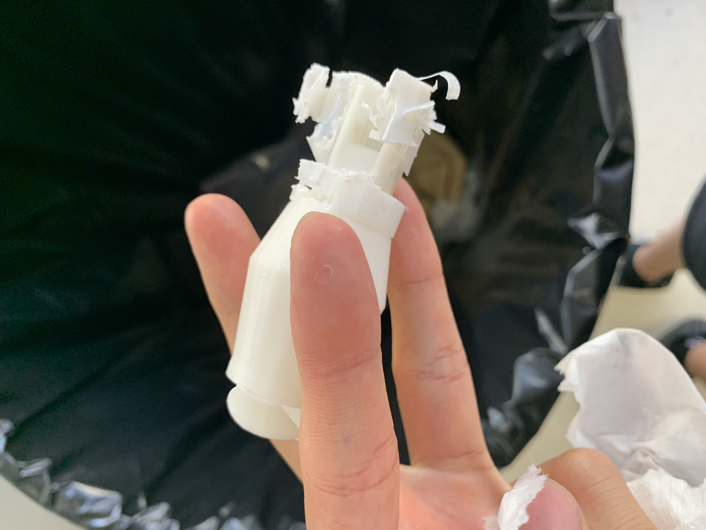

I discovered print in place mechanisms. Thus I wanted to try and make a coupler that is printed in place that allows for force that is applied linearly while simultaneously allowing rotary motion. I drew inspiration from the Kaleidocycle (link) and designed my own as seen in this video. I printed this in our school’s new printer, which came out great as seen in the image below (although it was quite difficult to get the supports off. I requested tree support from our manufacturing team and somehow it came out to be normal support). I found that it was not viable for our situation as seen in this video. The rotary motion of the coupler was fine, but the problem mainly lay in the linear force. When applying a linear force, the inner piece sort of gets stuck in the outer piece, which doesn’t allow it to rotate. I tried to put water in to see if I could improve it with some lubricant, but it didn’t work as well. I will use the original coupler.
Print in Place Gripper Refined V2 Coupler Test
